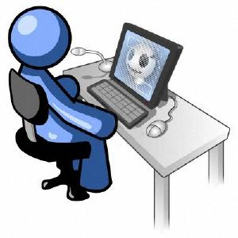

Sezione IIIA
 Descrivi la realizzazione pratica del lavoro effettuato:
Per crearmi la mia postazione ho dovuto prendere i vari cavi di alimentazione, il cavo ethernet costruito da me, un monitor e un pc. Ho collegato i cavi di alimentazione e il cavo ethernet alle varie prese, da rendere cosi accessibile.
Alla prima accensione ho dovuto:Installare il sistema operativo Windows 7 con la configurazione della lingua e i vari aggiornamenti con tutti i driver.Ho seguito le istruzioni del foglio, installando i vari software applicativi e disinstallandone alcuni; ho impostato le pagine web con il sito della Galdus e ho creato i vari utenti richiesti ognuno con le configurazioni dateci.l'ultima cosa fatta sono e stata attivare i firewall e l'antivirus, in modo da proteggere il pc.